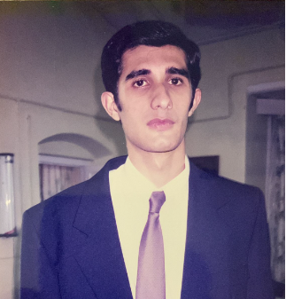

Resume - Sameer Taneja

Summary
A bottoms up research analyst with over 18 years of investing experience in global markets.
Education
- 2003-2005 MBA, XIM Bhubaneswar
- 1998-2002 BE, Electronics and Communication, VTU Karnataka
Work Experience
- 2005-2007 B&K Securities, Analyst Metals and Mining Sector
- 2007-2019 Investment Analyst at Kelusa Capital Tiger Cub
- 2019- Present Director, Investic Research Pte. Ltd.
Skills
- Proficient in MS Excel,Powerpoint and Word
- Basic Web development,Python and VBA
- Languages spoken : English, Hindi and Spanish
- Sports: Tennis, Badminton and Chess
Awards and Certification
- FRM Financial Risk Management, 2006
- Top quartile research writer on an Asia based platform called Smartkarma